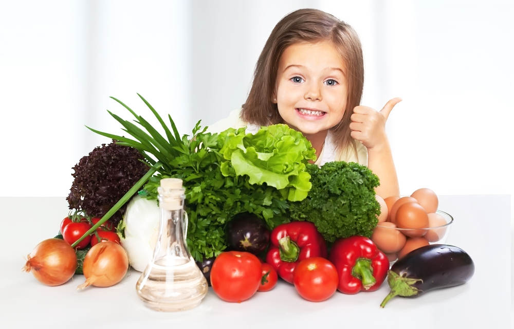

Задача полезных продуктов — обеспечить организм энергией и «строительными» материалами. Полезные продукты богаты аминокислотами, витаминами, микро- и макроэлементами, жирными кислотами, клетчаткой. При этом они хорошо усваиваются, не замедляют обмен веществ и не вредят здоровью.Полезные продукты можно условно разделить на несколько групп: белковые продукты, фрукты и овощи, неочищенные крупы и продукты из цельнозерновой муки.
Здоровое питание — это питание, обеспечивающее рост, нормальное развитие и жизнедеятельность человека, способствующая укреплению его здоровья и профилактике заболеваний. Это залог долгой жизни, об этом знает и ребенок. Что нужно делать, чтобы прожить до ста лет? Диетологи уверяют, что секрет долголетия − именно в здоровом и полноценном рационе. 
Правильное питание – это не контроль калорий и бесконечные диеты, это полноценный рацион, в котором должны присутствовать все необходимые продукты: мясо, злаки, молочные продукты, фрукты, овощи, орехи. Избегать нужно только вредных булочек, шоколадок, сладких газировок и полуфабрикатов.
Часто мы едим то, что попадается под руку, что можно купить «на бегу» и быстро разогреть в микроволновой печи. Выявлять пользу продукта (или его вред) порой нет времени. Главный критерий выбора в еде – вкусно, быстро, сытно. Правильно ли это? Конечно, нет.


С помощью еды мы можем улучшать настроение и повышать уровень энергии, вкусная еда и красивая подача блюд стимулируют процесс пищеварения. Но в этом же кроется опасность – можно увлечься и начать безуспешно «заедать» психологические проблемы.Все чувства человека находятся под контролем мозга. Как только мозг получает от желудка сигнал, что тот пустой, человек чувствует голод и наоборот. Для появления чувства сытости требуется в среднем 20 минут. Поэтому, чтобы в спешке не съесть лишнего, нужно выделять на каждый приём пищи не менее 20 минут. При этом есть нужно небольшими кусочками, тщательно пережёвывая. Быстрое поглощение пищи приводит к потреблению лишнего, отсюда и появление избыточной массы тела.
Здоровый образ жизни – это ежедневный комплекс мер, который состоит из правильного сбалансированного питания, занятий спортом, отказа от вредных привычек, позитивного и гармоничного взгляда на мир. Все это и является образом и стилем жизни! Здоровым людям, желающим вести правильный образ жизни, не обязательно ходить к врачам-диетологам и скупать в огромных количествах книги о правильном питании, которые порой только путают и пугают. Чтобы накормить себя и своих близких правильной и здоровой едой, достаточно придерживаться нескольких правил, на которые опирается вся современная диетология.
Самое главное правило: нужно стремиться максимально витаминизировать блюда, которые мы едим. Желательно увеличить употребление сезонных овощей, фруктов и ягод – тогда ваш организм не будет испытывать авитаминоз, которым страдают люди весной. Необходимо уменьшать количество животных жиров, частично заменяя их растительными маслами. Ограничьте потребление чистого сахара и соли. Кондитерские сладости лучше заменять медом и сухофруктами, а соль – специями.
1. Сократить жиры животного происхождения.
2. Увеличить в рационе продукты, богатые насыщенными жирными кислотами, такими как Омега 3 (красная рыба, растительные масла, орехи).
3.Употреблять продукты, которые содержат клетчатку (злаки, овощи, фрукты, сухофрукты).
4. Употреблять в пищу свежеприготовленные блюда.
5. Не жарить на сливочном масле и полностью ликвидировать из рациона маргарин.6. Отказаться от чрезмерно соленых продуктов.
7. Вместо молока употреблять молочнокислые продукты (кефир, йогурт, ряженку).
8. Мясо, рыбу и птицу употреблять свежеприготовленными и только с травами и овощами (петрушкой, сельдереем, укропом, салатом, зеленым луком, капустой, шпинатом и др.).
9. Каждый день есть салат из свежих овощей или фруктовый салат.
10. Использование чистых и свежих ингредиентов в приготовлении пищи.
11. Исключение сахара, сахаросодержащих изделий, мучной продукции, копченостей, полуфабрикатов, майонеза, а также алкоголя.
12. Употребление сухофруктов (инжир, чернослив, курага) и орехов (фундук, кешью, миндаль, грецкий орех) между основными приемами пищи.
13. Принятие пищи в случае непреодолимого чувства голода.
14. Правильное сочетание еды (даже полезные блюда, взаимодействуя с другими пищевыми ингредиентами, могут значительно уменьшить свои полезные свойства).
15. Разделение пищи на 4-5 приемов, состоящих из маленьких порций.
16. Ежедневное меню должно включать большую часть свежих овощей и фруктов.
17. Не пропускать утренний прием пищи, который должен состоять из злаковых изделий, фруктов, кисломолочной продукции.
18. Ужинать не позже, чем за 2-3 часа до сна.